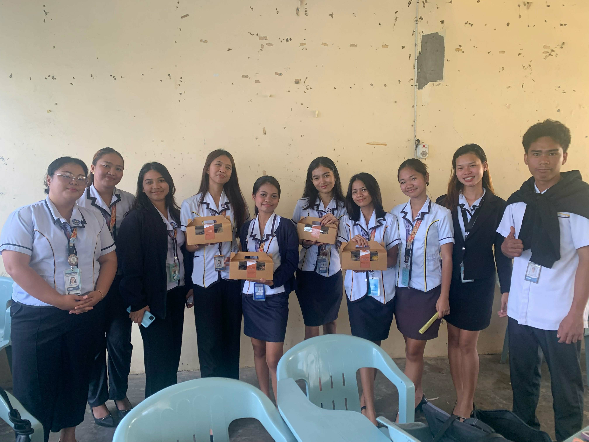

Bachelor of Science in Entrepreneurship
The Bachelor of Science in Entrepreneurship (ENTREP) is a four-year degree program designed to develop innovative and business-oriented individuals. It prepares students to create, manage, and grow their own businesses in a competitive and ever-changing market.
The program emphasizes creativity, innovation, and practical application of business concepts. Students are encouraged to explore real-world business opportunities and turn ideas into actual ventures.
ENTREP focuses on the fundamentals of business such as marketing, finance, operations, and management. It also highlights entrepreneurial thinking, opportunity recognition, and business innovation.
Students will engage in hands-on activities such as business plan creation, product development, and market analysis to prepare them for real-life entrepreneurial challenges.
• How to start and manage a business
• Business planning and strategy development
• Marketing and branding techniques
• Financial planning and budgeting
• Innovation and product development
• Customer analysis and market research
• Entrepreneurial and innovative thinking
• Leadership and decision-making skills
• Communication and negotiation skills
• Problem-solving and critical thinking
• Risk-taking and adaptability
• Time and resource management
• Hands-on business projects and activities
• Real-world business simulations
• Exposure to startup environments
• Opportunities to launch your own business
• Mentorship from business professionals

• Entrepreneur / Business Owner
• Startup Founder
• Business Consultant
• Marketing Manager
• Sales Manager
• Franchise Owner
• Business Development Officer